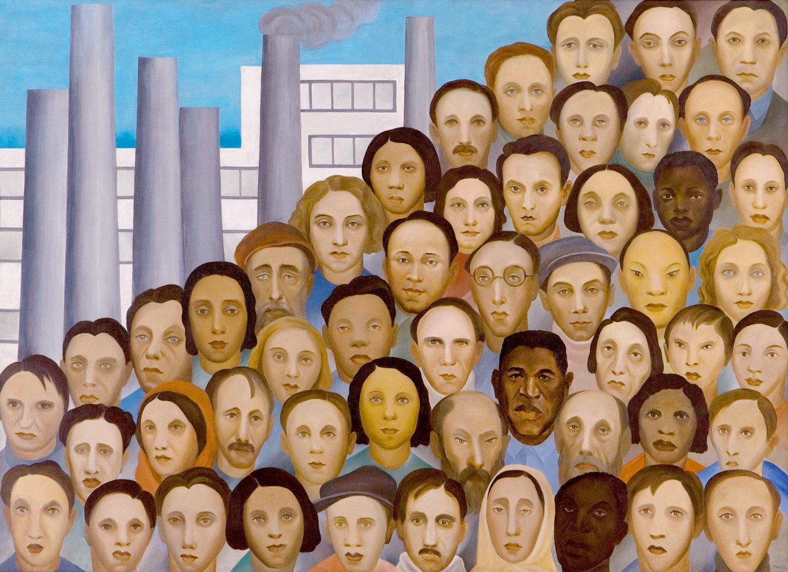

QUAL É O CONCEITO DE HUMANIDADE?
substantivo feminino.
Natureza humana;
reunião das características que são particulares à natureza humana.
Maneira bondosa de se tratar alguém; benevolência: tratava todos
com humanidade. Reunião de todos os seres humanos: a humanidade deixa a Terra cada vez mais populosa.

QUANDO SURGIU O CONCEITO HUMANIDADE?
Mas, se até a Idade Clássica a Ciência “depende”
do ser humano, entendido como “homem racional” ou “estreita união de uma alma e de um corpo”, na era
contemporânea essa relação se inverte. Desde o século 19 é o projeto científico que “funda” ou ao menos
garante as bases dos conceitos de humanidade.